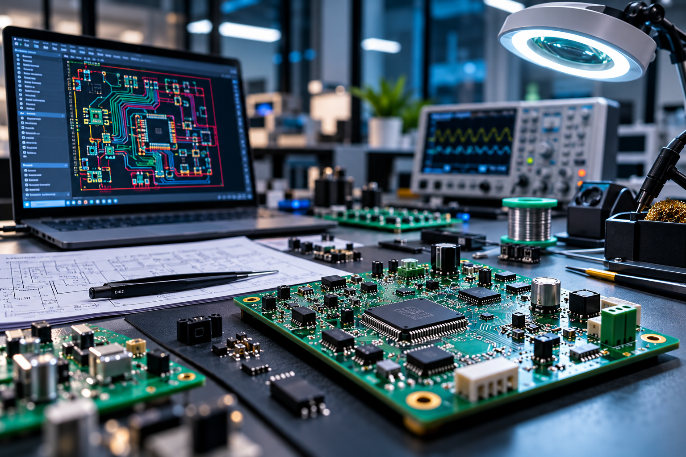
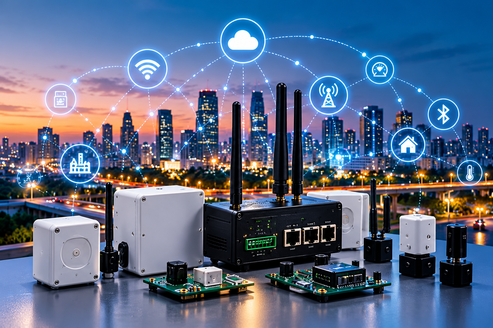
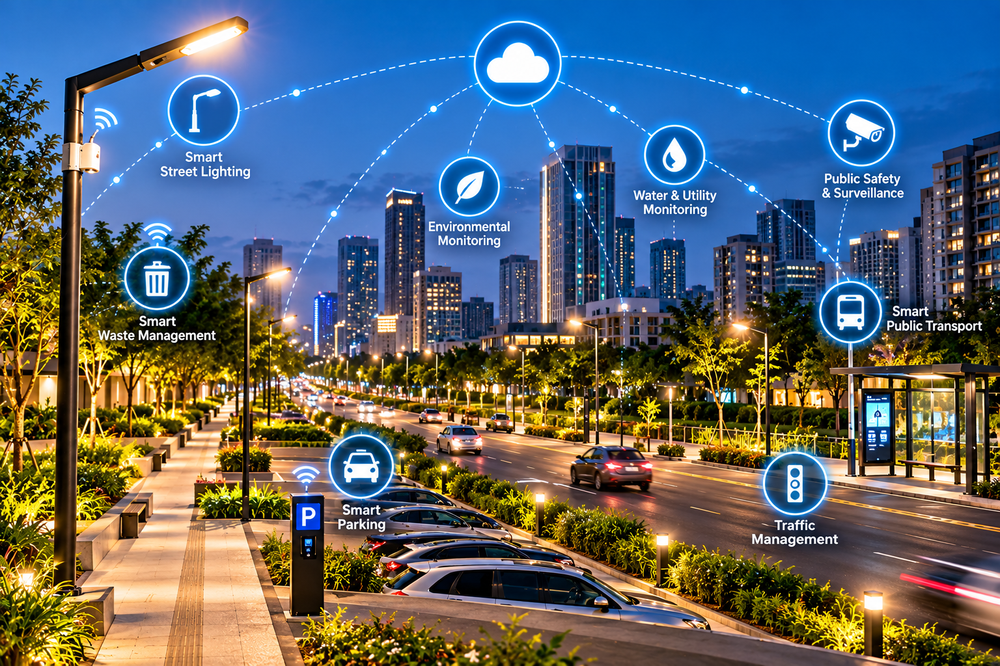
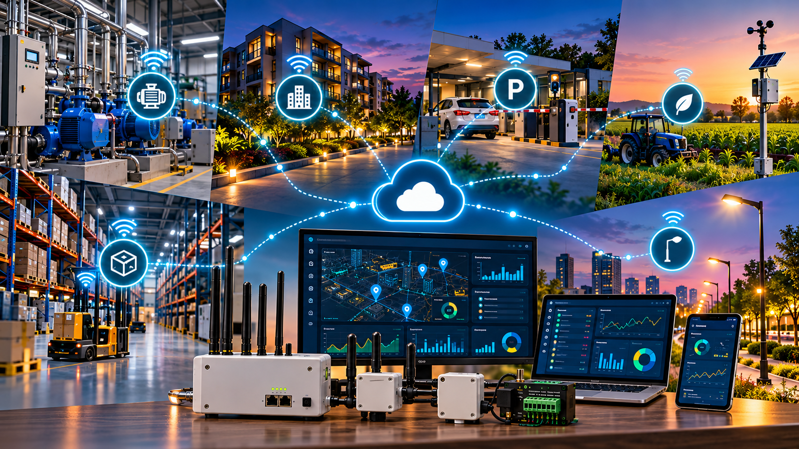

01
Electronics & Product Development
- PCB Design & Development
- Embedded Systems & Firmware
- Electronic Product Development
- PCB Manufacturing & Assembly
- Hardware Testing & Validation
- Engineering Consultancy
From custom electronics to connected systems, automation and deployment, we help turn technical requirements into practical solutions.




Need to monitor, control or automate something specific? We develop custom hardware and connected systems around your requirements.
Tell us what you want to monitor, control, connect or develop. We can help shape the right technical approach.